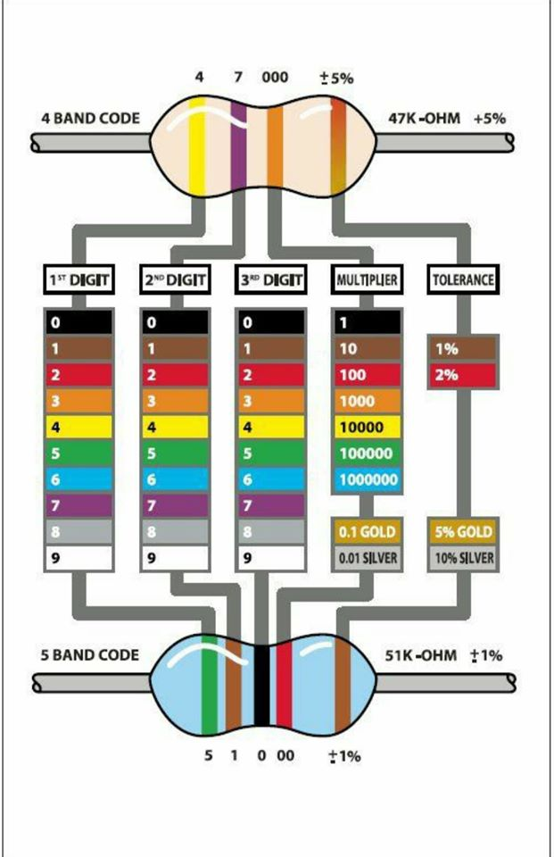

SITE UNDER CONSTRUCTION
Electrical Engineering
Electrical Units Definitions
Ohms Law

Electrical Work
Electrical work W is equivalent to mechanical work W as explained here.
Energy conversion, however, is subject to losses.
Units: 1 J (joules) equals 1 Wsec (wattseconds) equals 1 kW (kiloWatt hours) equals 1 MWh (MegaWatt hours) equals 1 Nm (Newton-metre)
Additionally
This usage is generally discouraged, since it can lead to confusion as to whether a given quantity expressed in newton metres is a torque or a quantity of energy. However, since torque represents energy transferred or expended per angle of revolution, one newton metre of torque is equivalent to one joule per radian.
The units of electrical work also translate to electrical units in ohms law. W (Work), I (Current), V (Volts), R (Resistance),
Electrical Power
Electrical Power P is equivalent to mechanical Power P explained here.
Energy conversion is subject to losses.
Units: W (watt); kW (kiloWatt); MW (MegaWatt)
Further the following relation applies to ohms law equations.
Units: P (Watts); V (Volts); I (Amps); R (ohms)
Resistor Color Code

Resistors
A resistor is a passive component that reduces the flow of current, due to change in current a change in voltage will result, and dissipates energy (joules) in the form of heat.
Resistance is from the atomic interaction of an atom to another atom.
Capacitors
Units: Q (coulomb); I (amps); t (seconds)
Inductors